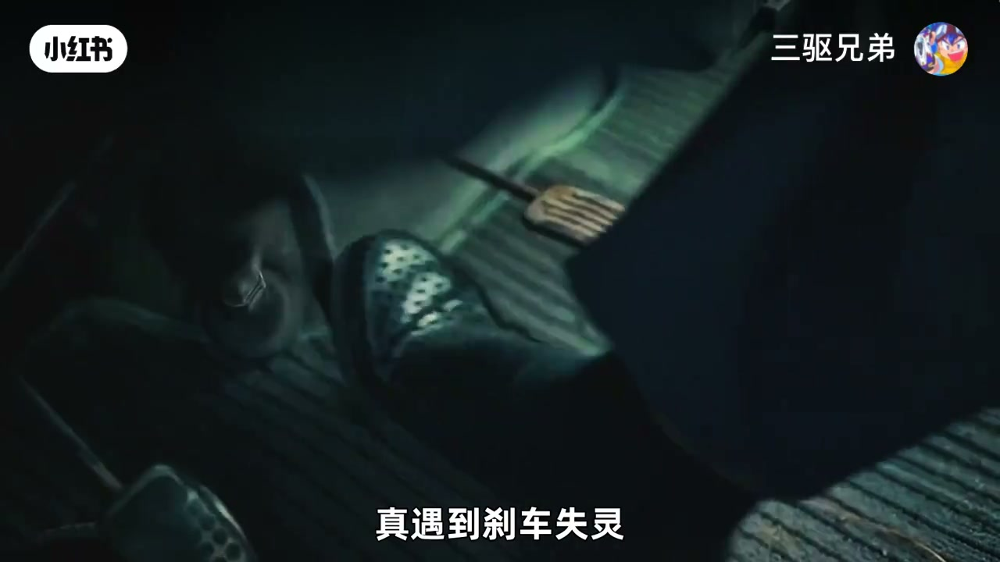
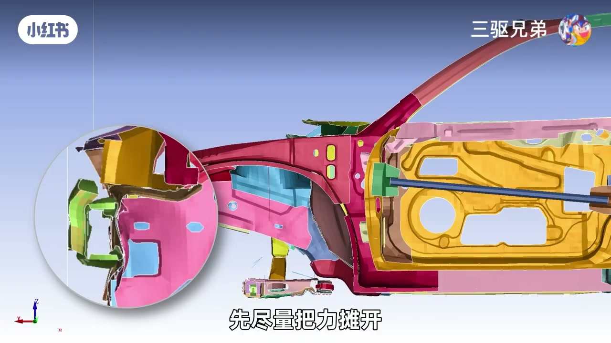
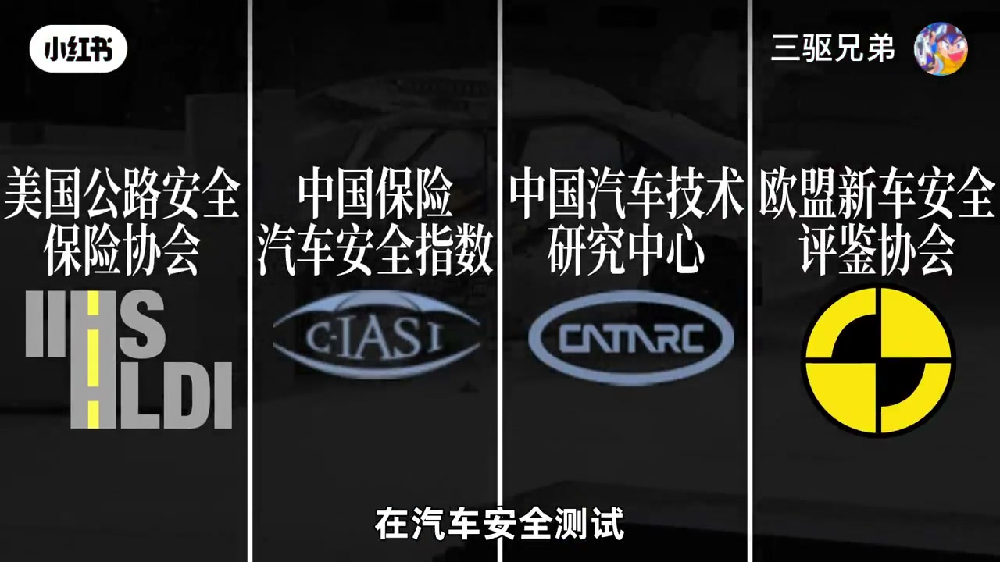
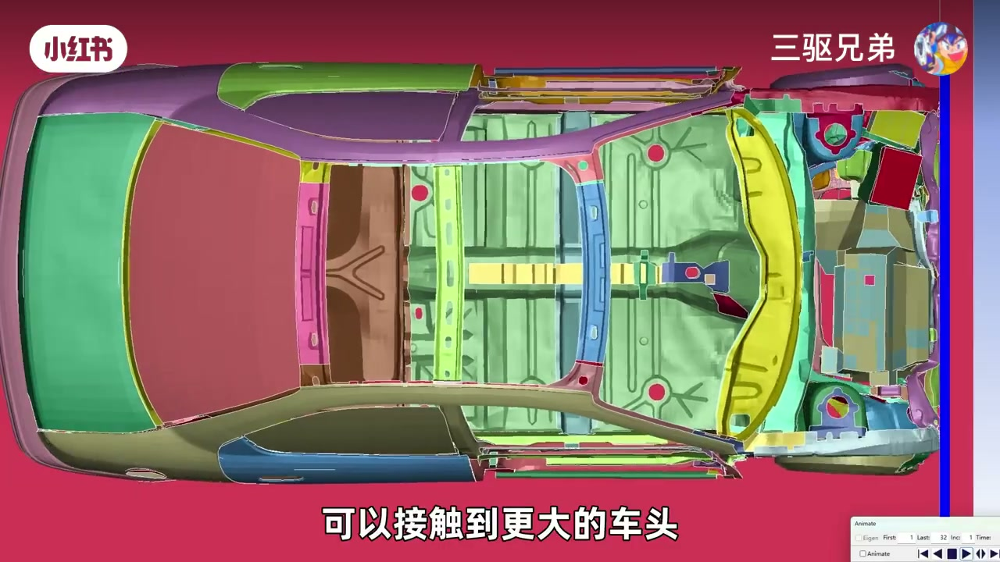
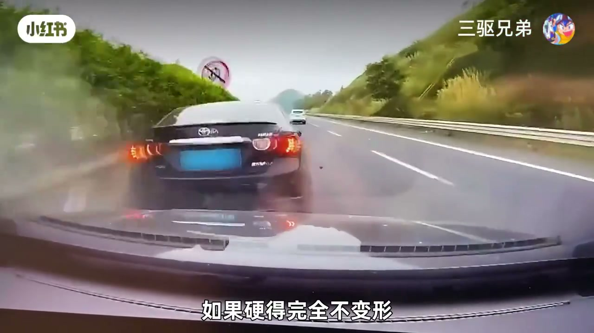
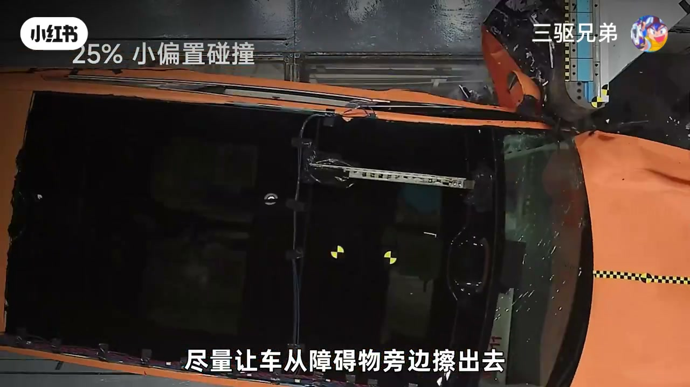
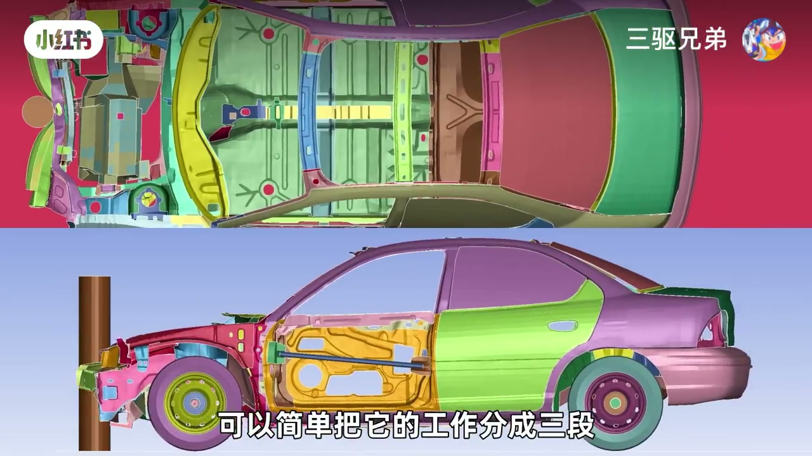
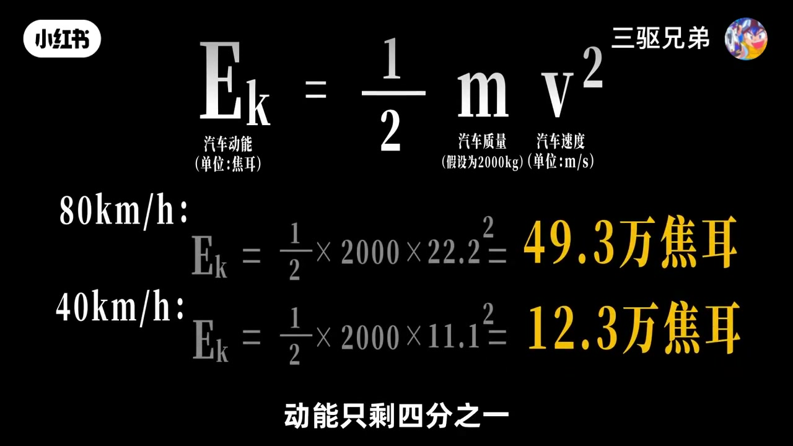
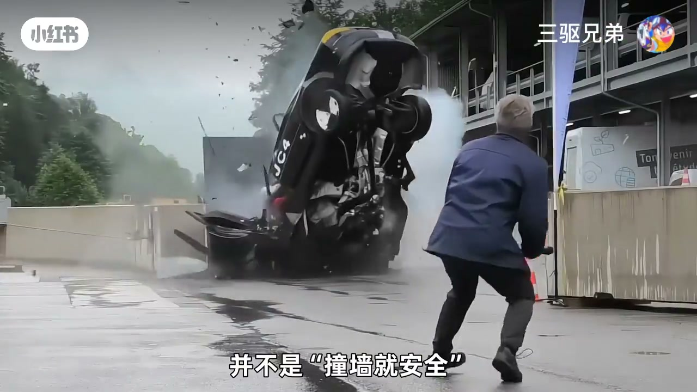

内容要点
刹车失灵时，左边是树、右边是墙，一秒钟你选哪个？直觉可能选「更软」的树，但事故与仿真测试给出的答案是：树反而更危险。UP 主三驱兄弟从碰撞吸能结构讲起——判断一次碰撞危险与否，不看障碍物多硬，而看防撞梁、吸能盒、前纵梁有没有接住撞击；树可以绕开关键结构直接伤及成员舱，而宽墙反而让整个车头一起吸能。最后给出刹车失灵后的完整处置清单：松油门、扶稳方向、开双闪、全力踩或高频点刹、逐级降挡、谨慎用电子手刹、避险车道，以及「千万别在最后一刻猛打方向找墙」。
知识结构
刹车失灵时左边树右边墙，一秒选择；直觉觉得树更软更安全，但结论相反。
碰撞危险不取决于障碍物多硬，而看防撞梁摊开力、吸能盒与前纵梁压溃折叠、载荷路径是否把能量消耗在成员舱前。
细树干撞在两根前纵梁之间会绕过吸能结构直接冲击成员舱；车头一侧受力时变形更严重。
25% 偏置碰撞测试（64km/h 单侧撞刚性物）是专门应对这种情况的项目；优评车在现实正面碰撞中驾驶员死亡风险低约 12%。
平整宽墙接触更大车头，防撞梁、吸能盒、左右纵梁同时参与吸能，类似 100% 正面碰撞；树的优势不在软，而是让整个车头一起吸能。
拳套比喻：金属拳套打水泥墙手会断；车太硬不变形，人就变形。安全追求的是乘客活下来，不是车没撞坏。
防撞梁看抗弯不看厚度（钢抗弯是铝三倍）、覆盖范围不是越宽越好、吸能盒的预折线让折叠可控、前纵梁三段分工。
看中保研碰撞测试别只看评分，要看 A 柱门框侵入、踏板位移；刹车失灵后松油门扶稳开双闪、全力踩或高频点刹、降挡、谨慎拉手刹、找避险车道，绝不猛打方向找墙。
树比墙危险，不是因为它硬，而是因为细窄障碍物能绕开防撞梁、吸能盒、前纵梁这套吸能结构，直接冲击成员舱；宽墙反而让更多结构同时吸能。刹车失灵时，决定后果的第一因素是车速，第二是车辆是否失控，第三才是撞树还是撞墙——正确处置是全力减速并稳住车辆，而不是在最后一刻去找墙。
00:00-00:57开场：选树还是选墙？答案藏在吸能结构里
视频用一个极限选择开场：「左边是树，右边是墙，一秒钟你选哪个？」如果你选了看起来更软的树，UP 主建议先看这段视频——「为什么看起来没有水泥墙结实的树，反而更危险？」
他用最真实的事故和仿真测试来说明。第一反应当然是初中物理：「树的接触面积小，压强更大，才会把车撞得解体。」但这里只说对了一半——「更关键的是，汽车负责吸收碰撞能量的结构有没有接住这次撞击。」碰撞瞬间，最前面的防撞梁先把力摊开，后面的吸能盒和前纵梁再通过压溃和折叠，用车身形变吸收能量。这条让撞击一步步向后传递的路径，叫载荷路径。


00:57-02:30树的危险与 25% 偏置碰撞测试
「所以判断一次碰撞有多危险，不能只看障碍物有多硬，要看防撞梁、吸能盒、前纵梁有没有接住这次撞击。」UP 主点出撞树最危险的地方：细窄的重载物体如果刚好撞在两根前纵梁之间，就直接冲着成员舱来。模拟结果显示，无论整体车身还是前排空间都会变形得更严重；如果撞在车头一侧，只有一边的纵梁参与吸能，车速高、角度刁钻时真能把车撞到解体。
针对这种情况，汽车安全测试里有一个专门项目叫 25% 偏置碰撞测试：让汽车以 64km/h 用车头一侧撞上刚性物体，主要看只有单根纵梁受力时成员舱还能不能保持完整。美国道路安全保险协会（IIHS）2023 年公布的一项现实事故调查显示：在 25% 偏置碰撞测试拿到优秀评价的车辆，在现实正面碰撞中驾驶员死亡风险比差评车辆低大约 12%。

02:30-03:18为什么墙反而更安全：让整个车头一起吸能
换成撞一面宽墙，情况就不同了：「平整的宽墙可以接触到更大的车头，让防撞梁、吸能盒和左右纵梁更有机会同时参与碰撞。」这种接近 100% 的正面碰撞，也是强制性国标（C-NCAP）的考试项目——「相当于考试压中了真题」。
结论被浓缩成一句关键判断：「不是撞墙不严重，而是汽车的车头更有机会按照设计好的方式溃缩，把碰撞能量消耗在成员舱前面。树的危险也不是硬，而是它可以绕开关键结构，直接伤及成员舱。」

03:18-04:43硬不等于安全：拳套比喻与安全本质
顺着「车头越硬越安全」的思路，UP 主抛出一个问题：为什么车企没有演变成「你硬我比你更硬」的安全军备竞赛？
他用拳套比喻解释：「这就像带着两种拳套去打水泥墙。普通拳套是中间的缓冲，一拳下去最多有点痛；换成金属拳套，一拳下去手可能就断了。汽车也是一样——如果硬得完全不变形，确实更耐撞，那里面坐的人就要变形了。」所以汽车安全追求的是「如何让乘客活下来，而不是车有没有被撞坏」。

04:43-05:50看懂车头结构：防撞梁、吸能盒与前纵梁
如何判断一台车的车头结构设计是否合理？UP 主先纠正一个误区：很多拆车视频喜欢量防撞梁厚度或吸能盒长度，好像数字越大越安全。但「防撞梁最重要的不是厚度，是抗弯能力」——易拉罐一捏就扁，却撑得起 7.5 公斤重物。最常见材料里，同样条件下钢的抗弯性能是铝合金的三倍，铝合金要做成日字型等截面结构补强。好车爱用抗弯能力差的铝合金，是因为轻和耐腐蚀。截面结构上，「口子越多，结构稳定性越好」。
覆盖范围也不是越宽越好——「就像小时候玩过的尺子，伸出去太远一按就软了，后面没有有效支撑就纯多余。」但在小重叠碰撞中，撞击刚好落在车头最外侧可能绕过纵梁，所以一些车型会在防撞梁末端加特殊支撑块，尽量让车从障碍物旁边「插」出去。真正负责消耗能量的吸能盒，重点是能不能按设计稳定地压下去：带凹槽的吸能盒看似偷工减料，那其实是工程师预留的预折线，碰撞时从这些位置开始像手风琴一样一层层压下去。最后是前纵梁——工作分三段：最前面被撞折把冲击接下来，中间继续折叠消耗能量，末端必须稳住，把剩下的力分给副车架、门槛和车地板。


05:50-06:45消费者怎么看：碰撞测试的读法与边界
「这套结构能不能按计划工作，不真正撞一次很多时候根本看不出来。」所以对普通消费者，更直接的办法是看中保研（C-IASI）的碰撞测试。但「别光看评分和爆了多少气囊，这几张图片才是关键」：正面碰撞看 A 柱、门框、脚步空间有没有明显变形，方向盘、踏板有没有向驾驶员移动；侧面碰撞看 B 柱和车门往车内侵入了多少。
不过碰撞测试也有自己的边界：「一台车拿到 G，只能说它在规定的工况下完成了这场考试，不代表这台车绝对安全。」

06:45-08:31刹车失灵处置清单与最终结论
回到开头的极限二选一。UP 主先否定一个想法：既然宽墙更容易让车头结构参与碰撞，是不是应该主动找墙撞？「当然不是。在真正的事故中，决定碰撞结果的是撞击速度——根据动能公式，车速降低一半，动能只剩四分之一。」
所以刹车失灵后要「想尽一切办法把速度降下来」：首先立刻松开油门、双手扶稳方向盘、打开双闪、继续尝试刹车；如果刹车突然变得特别硬，可能只是刹车助力失效，不要高频点刹，要全力踩；如果踏板变得很软，一脚到底才需要高频点刹重新建立制动压力。脚刹无法减速时用动力系统帮忙——手动挡逐级降挡，自动挡用 M 挡或换挡拨片，千万不要在高速状态下直接挂 P 挡或 R 挡，也不要主动熄火，否则可能同时失去转向助力。
接下来尝试手刹：机械手刹不能一把拉死，要慢慢增加力度避免后轮抱死车辆失控；电子手刹通过持续拉住开关启动紧急制动，但不同车型逻辑不一样，最好现在就翻说明书。与此同时观察周围环境，找避险车道、上坡、开阔区域。「如果碰撞已经无法避免，继续减速稳住车辆，不要为了寻找一面墙在最后一刻突然大幅打方向——翻车比撞树还危险。实在不行可以强行蹭护栏之类的坚硬物体进行减速。」
最终答案：撞墙并不更安全，墙和树的区别只是碰撞能量会怎么侵入车身；真正决定事故后果的，首先是碰撞速度，其次是车辆有没有失控，最后才是撞树还是撞墙。

完整转录（270段）
以下文本由 Whisper medium 模型自动转录，可能存在少量识别误差，已尽可能修正。
煞不住车
左边是树 右边是墙
一秒钟你选哪个
如果你选的树
可以先看这段视频
为什么看起来
没有水泥墙结实的树
反而更危险
接下来我们用最真实的事故
和仿真测试告诉你
真遇到刹车失灵该怎么处置
又该怎么避险
本期视频全程无广
放心使用
看到这种事故
大家的第一反应
肯定是初中物理知识嘛
树的接触面积小
所以压强更大
才会把车撞得解体
但这里只说对了一半
更关键的是
汽车负责吸收碰撞能量的结构
有没有接住这次撞击
碰撞发生了一瞬间
最前面的防撞梁
先尽量把力摊开
后面的吸能盒和前重量
再通过压溃和折叠
用车身的形变吸收能量
这条让撞击一步步向后传递的路径
就叫载荷路径
不同车型的具体设计会有所差异
但目标都是
车头可以报废
但成员舱必须尽量保持完整
所以判断一次碰撞有多危险
不能只看障碍物有多硬
要看防撞梁
吸能和前重量
有没有接触这次撞击
这也是撞速最危险的地方
重载物体如果刚好撞在两根前重量之间
直接冲着成员舱来
我们分别模拟了两种情况
可以看到撞速
无论是整体的车身
还是前排空间
都会变形得更严重
如果撞在车头一次
只有一边的重量参与吸能
车速高
碰撞角度也刁钻
真能把汽车撞到解体
针对这种情况
在汽车安全测试
有一个专门的项目
叫25%偏挚碰撞测试
会让汽车以每小时64公里的速度
用车头的一侧撞上刚性物体
这项测试主要看的是
只有单根重量受理的情况下
成员舱还能不能保持完整
并根据结果打分
美国道路安全保险协会
在2023年公布的一项现实事故调查显示
在25%偏挚碰撞测试
获得优秀评价的车辆
在现实正面碰撞中
驾驶员死亡风险比差评车辆低大约12%
如果是撞上一面宽墙
情况就不一样了
平整的宽墙可以接触到更大的车头
让防撞量 吸能荷和左右重量
更有机会同时参与碰撞
这种几乎100%正面碰撞
也是强制性国标
这相当于考试压重了真体
通常来说
25%偏挚碰撞成绩好的车
正面碰撞成绩都不会差
不是撞墙不严重
而是汽车的车头
更有机会按照设计好的方式溃缩
把碰撞能量消耗在成员舱前面
最强的优势不是软
而是能让整个车头一起吸能
树的危险也不是硬
而是它可以绕开关键结构
直接伤及成员舱
那么既然撞击让车头扛
那车头越硬 汽车就越安全
现在不少新车宣传安全
意思就是我的车有多硬
如果是两辆车发生碰撞
更重 结构更硬的车
确实更有优势
那么车企为什么没有演变成
你硬我比你更硬的安全经备竞赛
这就像带着两种拳套去打水泥墙
普通拳套就是中间的缓冲
一拳下去最多有点痛
换成金属拳套
一拳下去手可能就会断了
汽车也是一样
如果硬的完全不变形
确实更耐撞
那里面坐的人就要变形了
所以汽车安全追求的是
如何让乘客活下来
而不是车有没有被撞坏
那如何才能判断一台车的车头结构设计
是否合理呢
现在很多拆车都喜欢量防撞量厚度
或者吸能盒的长度
好像数字越大就越有安全感
首先防撞量最重要的不是厚度
是抗弯能力
一拉罐一捏就别
但也撑得起7.5千克的亚琳
最常见的防撞量材料
同样条件下
钢的抗弯性能是铝合金的三倍
铝合金想要做到同等的性能
就必须更厚
同时做成日暮这样的结构进行补强
看起来更结实
而好车更爱用抗弯能力差的铝合金
还是因为轻加耐腐蚀
以上是最常见的几种防撞量的结面结构
在材料厚度一样的条件下
可以简单理解成
口子越多 结构稳定性越好
除了扛得住还得接得住
所以覆盖范围也很重要
但不是越宽越好
就像小时候玩过的尺子
伸出去太远一按就软了
防撞量也是一样
看起来长
但是后面没有有效的支撑
就纯多余
但在小重叠碰撞中
撞击刚好落在车头的最外侧
就有可能直接绕过重量
所以一些车型会在防撞量的末端
增加特殊的支撑块
尽量让车从障碍物旁边插出去
所以看一根防撞量
不能只问它有多厚 覆盖力多高
还要看它用什么材料 前面怎么设计
以及接住撞击以后
能不能把力量继续传给后面的结构
真正负责消耗这股力的是吸能盒
吸能盒的重点是
能不能按照设计稳定的压下去
图中两种吸能盒
你觉得哪一种更好呢
B的凹槽看起来像是偷工减标
但这其实是工程师专门留下的预折线
发生碰撞时
吸能盒会从这些位置开始变形
像手风擎一样一层一层压下去
A很难判断好坏
因为车企很少公布自己吸能盒的截面结构
无法判断内幕有没有预留折线的设计
再往后就是前重量
也是车身的一部分了
不仅要应对碰撞
还要连接副车架 悬架
和车身其他结构
所以哪怕同一个品牌
不同车型的防撞量都不一样
单看拆车很难说谁好谁坏
为了方便理解
可以简单把它的工作分成三段
最前面先被撞折
把冲击截下来
中间继续折叠
尽可能把能量消耗在车头
最后靠近成员舱的位置必须稳住
把剩下的力量分给副车架 门槛和车地板等结构
但这套结构能不能按照计划工作
不真正撞一次
很多时候根本看不出来
所以对于普通消费者来说
更直接的办法是看中保严的碰撞测试
但别光看评分和爆了多少装备
这几张图片才是关键
正面碰撞看A柱 门框 脚步空间
有没有明显的变形
方向盘 踏板有没有向驾驶员移动
侧面碰撞看B柱和车门往车内侵入了多少
说到底拆车能让我们看到一台车
打算怎么性能
碰撞测试才能告诉我们这套车机
到底有没有奏效
不过碰撞测试也有自己的边界
一台车拿到G
只能说它在规定的工况下完成了这场考试
不代表这台车绝对的安全
回到开头的问题
刹车试令以后
既然宽强更容易让车头结构参与碰撞
是不是应该主动寻找一面传撞呢
当然不是
开头则是极限二选一
在真正的事故中决定碰撞结果的
是撞击速度
根据动能公式
车速降低了一半
动能只剩四分之一
所以刹车试令之后
想尽一切办法把速度降下来
首先立刻松开油门
双手扶稳方向盘
打开双扇
继续尝试刹车
如果刹车突然变得特别硬
可能只是刹车助理失效
不要高频点刹
需要用全力踩刹车
如果刹板变得很软
一脚到底才需要高频点刹
尝试重新建立制动压力
如果脚刹没法减速
就要利用动力系统帮忙
手动挡足即降低挡位
自动挡可以使用M挡或者换挡拨片
足即降挡
千万不要在高速状态下
直接挂入P挡或者R挡
也不要主动熄火
否则可能同时失去转向助力
和其他控制功能
接下来继续尝试使用手刹
如果是机械手刹
不能一把拉死
而是慢慢增加力度
避免后轮突然爆死车辆失控
电子手刹通过持续拉电子手刹开关
启动紧急制动
但不同车型的逻辑并不完全一样
所以最好现在就翻一下
自己的车辆说明书
而不是等到用上的时候来猜
在完成这些操作的同时
观察周围环境
找到避险车道上坡开阔区域
避开一切可能造成更严重后果的目标
如果碰撞已经无法避免
继续减速稳住车辆
不要为了寻找一面墙
在最后一刻突然大幅打方向
翻车比撞树还危险
实在不行可以强行蹭护栏之类的
坚硬物体进行减速
所以这期视频真正答案
并不是撞墙救安全
墙和树的区别只是
碰撞能量会怎么侵入车身
真正决定事故后果的
首先是碰撞速度
其次是车辆有没有失控
最后才是撞树还是撞墙的抉择
这些知识我当然希望
大家一辈子用不上
但如果真遇到那一秒
你必须在发生之前
就知道应该怎么做